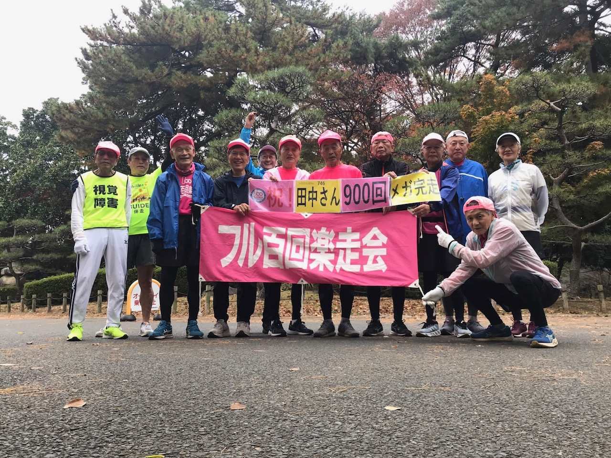
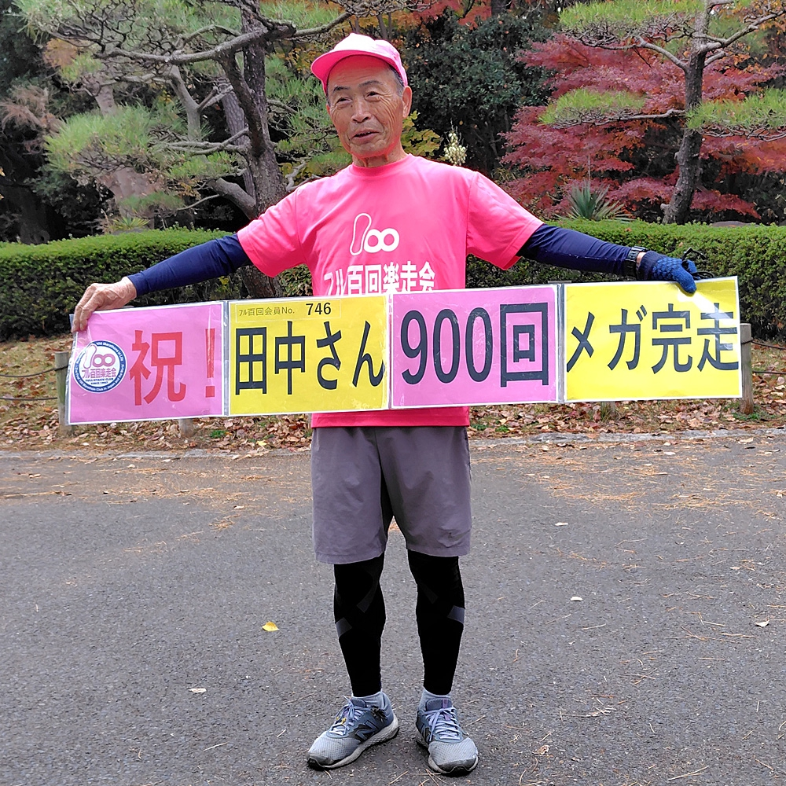

2025-12-03 05:59:42
2025年12月3日（水）平塚総合公園（神奈川県） 曇り夕方晴
| No. | 白鷺No | 氏名 | 種目 | タイム | フル百 |
|---|---|---|---|---|---|
| 1 | 98 | 田中 国貞 | フル | 6:34:20 | 746 |
| 2 | 403 | 飯田 和好 | フル | 6:46:51 | 881 |
| 3 | 340 | 島田 八十美 | フル | 6:48:56 | 830 |
| 4 | 319 | 本内 克洋 | フル | 6:56:22 | 839 |
| 5 | 318 | 阿部 真 | フル | 6:57:10 | 818 |
| 6 | 11 | 渡邊 富夫 | フル | 7:24:34 | 69 |
| 7 | 157 | 佐藤 儀雄 | フル | 7:48:16 | 790 |
| 8 | 30 | 竹田 明彦 | フル | 9:10:46 | 3 |
| 9 | 32 | 金子 正典 | 20.5km | 3:29:23 | 253 |
| 10 | 124 | 村川 進 | 13.6km | 1:48:26 | 781 |
| 11 | — | 吉村 貴志 | 伴走 | — | — |
| 12 | 299 | 井出 優子 | 10.2km | 1:52:10 | 856 |
| 13 | 426 | 市川 直子 | 8.5km | 1:07:18 | — |
| 14 | 145 | 植田 秀夫 | 5.1km | 1:02:00 | 787 |
| 15 | 208 | 古橋 和子 | 1.7km | 0:28:00 | 565 |


いよいよ師走、冬です。でも今日は天気は曇りでしたが風がなく寒波到達前で走り易い1日でした。
金色の銀杏葉が舞い散り、メタセコイアが、スカーレット色と言いたい程の褐色紅葉でした。
ｗ・ｍにしては15名の大勢の参加でした。そして沢山の差し入れを頂きました。
竹田さんから与論マラソン土産の黒糖飴、飯田さんからクッキー、古橋さんからミカン1箱、
井出さんから吟醸酒ありがとうございました。
本日、田中はメガマラソン900回を達成し、皆さんと記念写真を撮らせて頂きました。感謝。
（担当 田中さん）